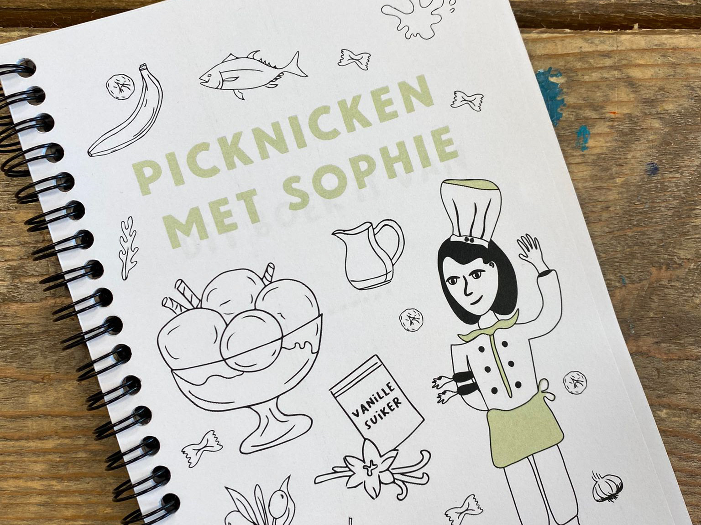

About me: From workshop to interface.
Hi, I’m Casper. Welcome to my portfolio—or as I like to call it: my organized chaos. Born in '97 and raised in Delft, I am currently studying Communication and Multimedia Design (CMD) at the Hogeschool Utrecht.
My work philosophy is rooted in practice. Having spent years in the workshop focusing on woodworking, electrical engineering, and horticulture, I now apply that same makers-mindset to the digital world. To me, there is no difference between building a tangible installation or designing a complex UI; it is all a craft.
Whether I am crafting illustrations, designing logos, or managing communities, I am always tinkering. My goal is simple: to translate the physical satisfaction of 'making things' into digital experiences that truly resonate. Currently, I am merging these worlds by building custom smart home solutions and running my own Linux AI Homelab—the very engine that helped construct this portfolio.
Selected Work

Generation plastic soup
2025

Street Fresh
2024

Samen spelen
2024

Grijpmachine
2024

Kodak
2024

Bomby Bird
2024

Picknicken met Sophie
2023

OSRS Kerst
2023

De Grinch
2023

Vechtclub XL
2023

Hu Begeleidt
2022

Dan maar hier!
2022
Let's Connect
I am always open to discussing new projects, technical collaborations, or simply sharing ideas about craftsmanship and technology.